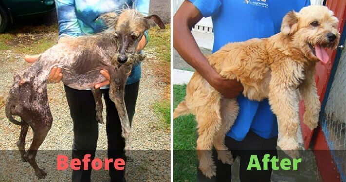

The following are some pictures of animals that were rescued from the streets. This is what can happen if you decide to let them in your lives.
You could be a part of these transformations

References
Good Housekeeping Website
Bored Panda Website
Pinterest Website